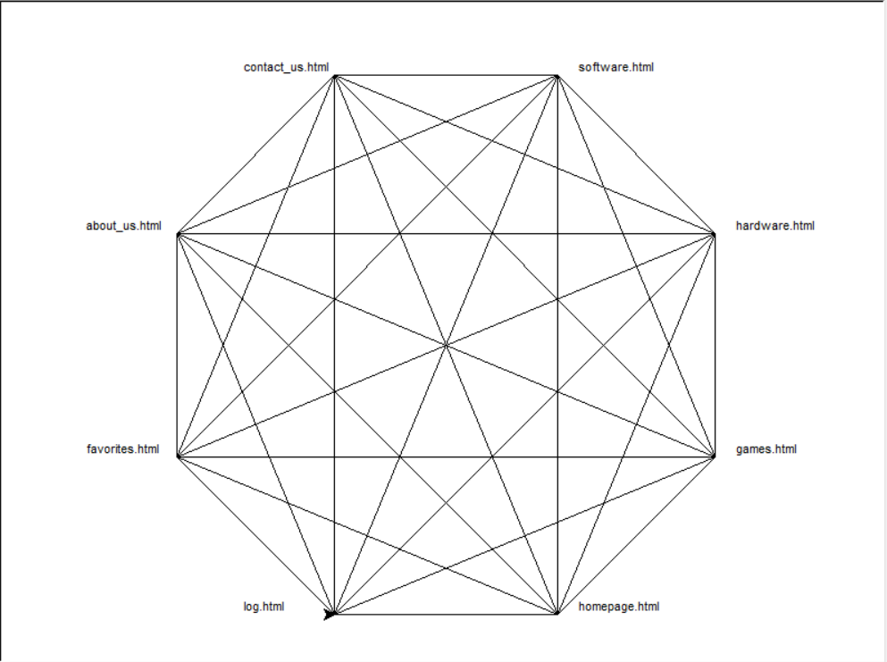

TechFinder Design Plan
Erlend Hindrumsen, Simen Ørstavik Kloster-Jensen, Timon Alexander Selnes, Tobias Storli, Tor Augund Stokke
IT2805, 06. October 2021
Client Name: Ola Nordmann
Website Name: TechFinder
Contact Person: Birgitte Skaug
The websites purpose is to provide people who are interested in the technology world with a window into what is happening. Through access to a feed of useful/personalized articles, news, magazines etc. people who struggle to find information they're seeking will be able to boost their understanding of technological concepts and follow the growth of their favorite companies or products. By making it easier to find and organize such information, our goal is to get more people interested in how the worlds technology scene is evolving, and thus inspire a new generation into choosing a career in tech.
The target group for the website is tech-enthusiasts who want to be up to date on latest technology on the marked. It will also be a platform for people who want to learn more about new tech. Everything from computer and phones to the latest OS and software. The website should be accessible for all gender and age groups, but statistically speaking, we hypothesis that our most frequent visitors will be men in age group 15-35 years old
Our navigation structure optimizes freedom for the user. We have made it so the user can access all the sites from every site. In practice, we'll have a navigation bar on the top with most of the .html-files that'll constantly be visible. Our reason for making this type of navigation structure is to make it easy for the user to find the site he/she is looking for. And they don't have to use multiple clicks to get there: They only need one! (to navigate our page, external links might require more)
While working on the design, we have especially focused on making TechFinder a website that's easy to use for everyone. Our main functions will be displayed in a navigation bar at the top, and it will always be visible so our older users won't panick if it suddenly disappears. However, to also please our young audience we will have a sidebar on the left that will only be shown if it's being hovered over. There will only be favorites and log here, so the main things are still in the top navigation bar.
We have the games tab to accomodate the interest of our main audience, which are youth and young adults
We have the hardware section for tech-enthusiasts and hobby-enthusiasts that keeps updated on the newest hardware.
Let's not forget about the software tab for those interested in the newest OS' and programming news.
For the ones with feedback and questions, we have a section were the user can contact us.
For the curious one, we have an about us page where the user can read how TechFinder came to exist.
Background Image:
https://besthqwallpapers.com/Uploads/12-4-2021/162775/thumb2-blue-digital-circuit-texture-blue-digital-background-circuit-board-background-blue-neon-lines.jpg
(Will be used on every page)
Navigation Bar Color (HEX): #90ee90
Font type: "Bembo"; fallback: "Lucida Handwriting"; fallback2: "sans-serif"
For all pages the menu bar wil be static, meaning it wil always be
on the top of the page. The current pages font should be highlighted 'e.g. bold text'
The layou of the article pages will be smimular to each other, but the difference wil be the
content of each page.
The structure of each page wil feature a main article at the top of the page, this will in most cases
be the latest article. This article will the bigest article on the screen, to get the attension of the reader.
If there is an article of big relevants to the tech world this article should be the top 'main' article instead
of the latest released. This happens if the editor of the page pins the article to the top for a period of time
This includes
1. Homepage
This is the main of the website, and wil be where the user
is taken to when they enter the URL <techfind.xxx>.
The homepage wil show the latest article. With the help of javascript, the newest articles wil be on top, and will be bigger
than the articles below. Articles wil get smaller down the page, to fit more articles at the same page.
In contrast to the other feed-pages, the homepage will be standardized and show a variety of articles. This is
for the user to get used to the layout before they enter a category-page and/or keywords to persinalize their feed.
2. Games
This page is mainly for article about games but can share som content with software, if there is an article that could be
relevant for both categories like a new game engine (e.g. Unreal Engine 5).
3. Hardware
This page is for tech that can be categorized as hardware, everything from computer hardware, to new material that can be used in
space rockets, cars, cameras, etc.
4. Software
This wil show articles that main contains software development, AI, programming etc.
All articles pages wil have different content but articles with shared content wil be visible on more then one page.
We will be using a GIT repository to keep track of who creates what and when. We will also be using the following table and organzational scheme to distribute the workload equally.
We've created a repository named "IT2805_group_68" on Github that all of the following files will be contained in.
List of Files and Folders